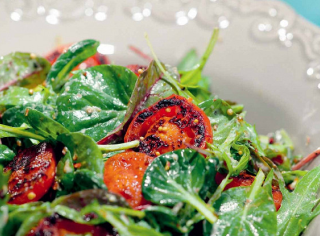
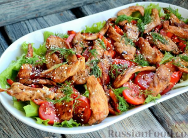
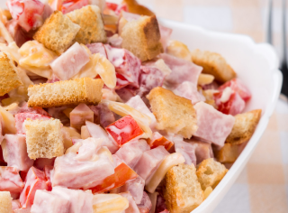

Салаты

Быстро
Салат с обжаренными томатами
Салат с жареными помидорами пробовали? На первый взгляд, весьма странная практика. Но на
деле получается интересный салат (или, скорее, легкая закуска).

Быстро
Салат с сухариками "Королевский"
Гости будут довольны. А главное, этот салат очень быстро делать.
Рецепт очень пригодится в качестве салата на день рождения.

Тёплый салат с курицей, сладким перцем и помидорами
Мясо и овощи - прекрасное сочетание для полноценного приема пищи. Сочные помидоры и
кусочки
печёного болгарского перца делают салат сочным и насыщают его яркими летними красками.

Салат с ветчиной
Очень вкусный салат с ветчиной, сыром и помидорами, "приправленный" сухариками из белого
хлеба. Объедение!Очень вкусный салат с ветчиной, сыром и помидорами, "приправленный"
сухариками из белого хлеба. Объедение!